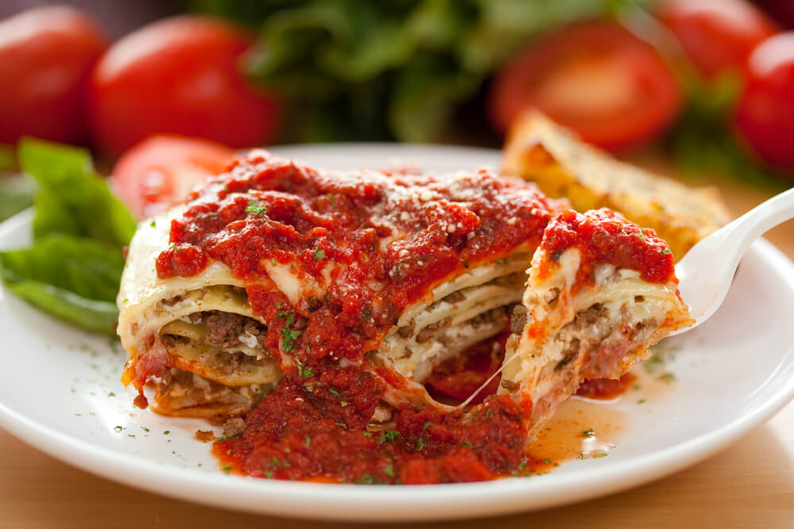

American Lasagna

About the Dish
Lasagna is a type of wide, flat pasta,
possibly one of the oldest types of pasta. Lasagna, or
the singular lasagna, is also an Italian dish made of stacked layers of
this flat pasta alternating with fillings such as ragù and other
vegetables, cheese, and seasonings and spices such as garlic, oregano and
basil. The dish may be topped with melted grated mozzarella cheese.
Typically, the cooked pasta is assembled with the other ingredients and
then baked in an oven. The resulting lasagna casserole is cut into
single-serving square portions.
Ingredients
- 1 1/2 pounds of ground lean beef
- 1 large onion (chopped)
- 2 tsp salt
- 2 tbsp brown sugar
- 1 tsp dried oregano
- 2 cloves garlic, minced
- 1 tbsp chopped basil
- 1 (30 oz) can diced tomatoes
- 12 lasagna noodle sheets
- 1 pint ricotta cheese
- 1 cup parmesan
- 2 tbsp dried parsley
- 4 cups grated mozzarella cheese
- 1/4 cup vegetable oil
- 2 eggs, beaten
- 2 cans tomato paste
- 2 tbsp cooking spray or butter
How to make American Lasagna
-
In a large skillet over high heat, add in the oil and cook the ground
beef until it is golden. This should take around 5-8 minutes. Drain away
the fat from the beef.
-
Add in the oregano, basil, 1 ½ tsp salt, brown sugar, tomato paste, and
diced tomatoes in the beef and keep simmering for another 40-45 minutes.
- Preheat the oven to 190 degrees C.
- Boil water in a large pot and a pinch of salt in it.
-
When the water reaches a boil, add the pasta sheets and cook them for
5-8 minutes or until they are al dente.
-
Drain the water and blot the pasta sheets with some napkins until they
are dry.
-
In a medium bowl, beat the eggs, parsley, ½ tsp salt, parmesan, and
ricotta cheese and mix well until all the flavors are fully combined.
-
In a 9x13 inch baking dish, grease the bottom with some cooking spray or
butter.
-
Layer the dish with 1/3 of the pasta sheets until it is fully covered.
-
Cover the pasta sheets with 1/3 ricotta cheese mixture, top it again
with 1/3 of the grated mozzarella, and then 1/3 of the beef tomato
mixture. Repeat this layering technique thrice and sprinkle some
additional mozzarella and parmesan on the top.
-
Bake in the oven for 30-35 minutes and let it stand for 10-15 minutes.
- Serve and enjoy!
Back to All Recipes